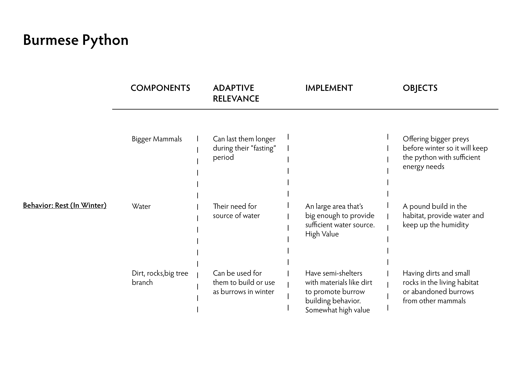

Bermese Python: Proposal One
The idea behind this proposal came from after learning that even though pythons as one of the largest snakes in the world. They also have many enemies. Especially for new burns. Python might seem threating, however, they move extremely slowly and are not venomous. They can be attacked and be eaten by dogs, birds, frogs or even some of the large spiders. In addition, pythons usually seek tree branches and abandoned burrows for shelter, two special type of python even know how to create their own burrows. In addition, Burmese Python are usually found from Myanmar eastward across southern Asia through China and Indonesia. There for to create a living habitat for them in an area where the climate and weather isn’t quite similar to their natural habitat is extremely important for their wellbeing. On top of that, winter is a vulnerable season for Burmese Pythons, they usually try to remain hidden from October to February until the temperature rise. Even though it is a period where they are lest active, personally I find it more important to promote a natural environment. Burmese Python also suffering from slaughtering from human, they have been listed as “Vulnerable” by the IUCN. They are usually being hunted and traded for Leather Market. “Important reasons for the decline are trade for skins and for food; habitat degradation may be a problem in some upland areas” (Wikipedia).
Bermese Python: Proposal Two
Feeding is obviously one of the most important aspect of animal’s welfare. Even though having enough food is considered survival, with the right feeding method it could promote behavior and enrich the living environment for an animal. Unlike other type of snakes. Pythons are constrictors. That means then grab their prey with their teeth and coils them. Contrary to popular beliefs, python don’t crush their preys, rather it slowly squeezes them. Every time when a prey exhales, it will wrap them tighter until they suffocate to death. Pythons also can sense when their hearts stop beating, therefore they know when to release their preys. In addition, unlike other snakes, pythons are slow, and they move straight. In order to compensate with that, instead of chasing, pythons ambush their preys. They’d wait until they can sense the heat of their prey getting closer and then strike. I thought it would help them to manage more difficult movement if their preys are birds which can fly and therefore add the level of difficulty for the pythons while they hunt. In addition, I think introducing their preys from a higher point in their living environment will encourage them to move more and climb trees to get to their preys.
Experts Links:
Sara E. Viernum - Wildlife Biologist / Herpetologist